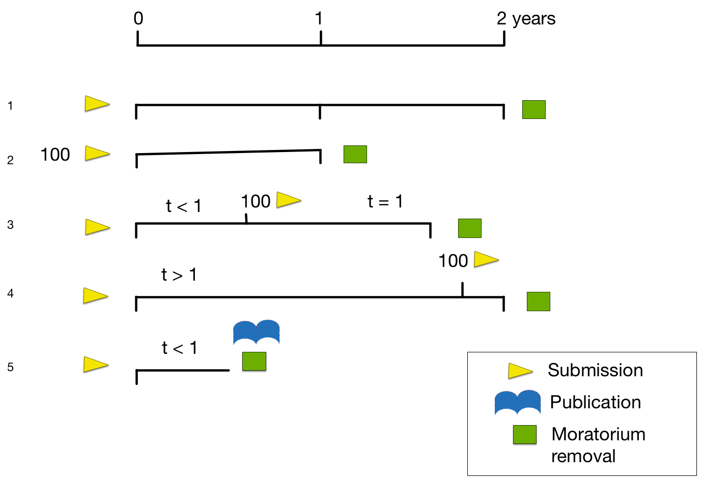

ICGC Publication Guidelines
Members of the ICGC are committed to the principles of rapid data release. However, like other large-scale genomic projects, members do not consider the deposition of its data into its own or public databases to be the equivalent of publication in a peer-reviewed journal. Therefore, although the data are available to others, the members still consider them to be formally unpublished.
The members of the ICGC have adopted data release policies that will accelerate the dissemination of datasets through rapid data releases that will precede publication of the global analyses of ICGC member datasets, anticipating the data will be useful for many investigators. The Consortium anticipates that the Project's data will be used in many ways, such as in developing new analytical methods, in understanding patterns of somatic mutations, and in guiding selection of mutations, genes, and other targets that will be used to develop biomarkers for cancer detection, diagnosis and prognosis, and new therapeutic interventions. Thus, the Consortium recognizes that the data are available to many users for a variety of purposes.
For more information on ICGC's Publication Policy, please see Section E3 of the Consortium Policies and Guidelines:
Time limits for publication moratoriums
All data shall become free of a publication moratorium when either the data is published by the ICGC member project or one year after a specified quantity of data (e.g. genome dataset from 100 tumours per project) has been released via the ICGC database or other public databases. In all cases data shall be free of a publication moratorium two years after its initial release.

Legend
Scenario 1: 1 genome is submitted and made available on the ICGC portal, and two years later the moratorium period is finished.
Scenario 2: 100 genomes are submitted and made available on the ICGC portal, and one year later the moratorium period is finished.
Scenario 3: 1 genome is submitted and a few months later, a total of 100 genomes are made available on the ICGC portal, and one year later the moratorium period is finished.
Scenario 4: 1 genome is submitted and several months later, a total of 100 genomes are made available on the ICGC portal. When a total of two years from the time of the first genome is reached, then the moratorium period is finished.
Scenario 5: Any number of genomes are submitted and made available on the ICGC portal, and a paper about them is published by the submitting group, the moratorium period is finished.
The quantity of data on which the initial global analysis will be carried out will vary between tumour types but is likely to be data on 100 tumour samples for more common tumour types and fewer for rarer tumour types. Details of the status of a publication moratorium is specified for individual projects below:
Current Moratorium Status for ICGC projects
| Project Key | Country | Project Name | EMBARGO STATUS |
|---|---|---|---|
| PACA-AU | Australia | Pancreatic Cancer - AU | No Embargo. Data available without limitations |
| OV-AU | Australia | Ovarian Cancer - AU | No Embargo. Data available without limitations |
| PAEN-AU | Australia | Pancreatic Cancer Endocrine neoplasms - AU | No Embargo. Data available without limitations |
| PACA-CA | Canada | Pancreatic Cancer - CA | No Embargo. Data available without limitations |
| PRAD-CA | Canada | Prostate Adenocarcinoma - CA | No Embargo. Data available without limitations |
| BLCA-CN | China | Bladder Urothelial carcinoma - CN | No Embargo. Data available without limitations |
| GACA-CN | China | Gastric Cancer - CN | No Embargo. Data available without limitations |
| RECA-CN | China | Renal clear cell carcinoma - CN | No Embargo. Data available without limitations |
| RECA-EU | European Union/France | Renal Cell Cancer - EU/FR | No Embargo. Data available without limitations |
| LICA-FR | France | Liver Cancer - FR | No Embargo. Data available without limitations |
| EOPC-DE | Germany | Early Onset Prostate Cancer - DE | No Embargo. Data available without limitations |
| MALY-DE | Germany | Malignant Lymphoma - DE | No Embargo. Data available without limitations |
| PBCA-DE | Germany | Pediatric Brain Cancer - DE | No Embargo. Data available without limitations |
| ORCA-IN | India | Oral Cancer - IN | No Embargo. Data available without limitations |
| LINC-JP | Japan | Liver Cancer - NCC, JP | No Embargo. Data available without limitations |
| LIRI-JP | Japan | Liver Cancer - RIKEN, JP | No Embargo. Data available without limitations |
| THCA-SA | Saudi Arabia | Thyroid Cancer - SA | No Embargo. Data available without limitations |
| LAML-KR | South Korea | Acute Myeloid Leukemia - KR | No Embargo. Data available without limitations |
| LUSC-KR | South Korea | Lung Cancer - Squamous cell carcinoma - KR | No Embargo. Data available without limitations |
| CLLE-ES | Spain | Chronic Lymphocytic Leukemia - ES | No Embargo. Data available without limitations |
| BRCA-UK | United Kingdom | Breast Triple Negative/Lobular Cancer - UK | No Embargo. Data available without limitations |
| CMDI-UK | United Kingdom | Chronic Myeloid Disorders - UK | No Embargo. Data available without limitations |
| PRAD-UK | United Kingdom | Prostate Adenocarcinoma - UK | No Embargo. Data available without limitations |
| BOCA-UK | United Kingdom | Bone Cancer - UK | No Embargo. Data available without limitations |
| SKCA-BR | Brazil | Skin Adenocarcinoma - BR | Publication limitations in place until 2017-06-15 |
| ESCA-CN | China | Esophageal Cancer - CN | Publication limitations in place until 2016-05-14 |
| COCA-CN | China | Colorectal Cancer - CN | Publication limitations in place until 2017-01-14 |
| LUSC-CN | China | Lung Squamous cell carcinoma - CN | Publication limitations in place until 2017-01-14 |
| LIAD-FR | France | Benign Liver Tumour - FR | Publication limitations in place until 2016-09-11 |
| BOCA-FR | France | Bone Cancer - Ewing Sarcoma - FR | Publication limitations in place until 2017-01-14 |
| LIHM-FR | France | Liver Hepatocellular Macronodules - FR | Publication limitations in place until 2017-01-14 |
| PACA-IT | Italy | Pancreatic Cancer - IT | Publication limitations in place until 2017-01-14 |
| ESAD-UK | United Kingdom | Esophageal Adenocarcinoma - UK | Publication limitations in place until 2016-04-01 |
| BTCA-JP | Japan | Biliary Tract Cancer - JP | Publication limitations in place until 2016-11-27 |
For Moratorium status on TCGA projects, please visit http://cancergenome.nih.gov/publications/publicationguidelines
For Moratorium status on TARGET projects, please visit https://ocg.cancer.gov/programs/target/target-publication-guidelines
Data users should freely analyze pre-publication data and act responsibly in publishing analyses of those data in a manner that respects the terms described by the data producers. Data users are responsible for accurately citing the source of pre-publication data, including the version of the dataset. Data users are encouraged to contact the data producers to discuss publication plans in cases of uncertainty. For questions regarding moratorium status, please contact DCC HelpDesk at dcc-support@icgc.org